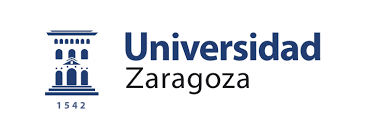
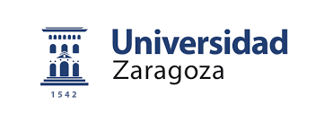

Autor: Santiago Rubio Felipo. Directores : Eduardo Lleida Solano, Dayana Ribas González.
Hasta la obtención de una conexión segura mediante HTTPS, el servidor proporcionado por la Universidad funciona con el protocolo HTTP, lo que significa que la información se envía sin estar encriptada. Como resultado, es posible que tu navegador interprete este envío de datos como no seguro. Para solucionar este problema y permitir el acceso a la encuesta, te recomendamos configurar algunos parámetros para habilitar la conexión segura. Sin embargo, es importante destacar que esta encuesta no solicita ningún dato personal, por lo que te pedimos que no introduzcas ninguna información que no esté relacionada con las preguntas realizadas. Recuerda que la seguridad y privacidad de tus datos son fundamentales, y en esta encuesta, no se te solicitará información personal. Si tienes alguna duda o inquietud, no dudes en contactarnos por correo 809622@unizar.es para brindarte la asistencia necesaria. Gracias por participar en la encuesta. Para configurar los parámetros necesarios para hacer la encuesta en Google tendrá que seguir los siquientes pasos:
Disculpe las molestias. Estamos a esperas de que nos ofrezcan una conexión https para evitar esto.
Este Trabajo Fin de Grado (TFG) se centra en sistemas de síntesis de voz. Los sistemas de síntesis de voz o sistemas TTS ("Text to Speech") tienen como objetivo generar voces naturales e inteligibles a través de texto.El objetivo principal de este trabajo se enfoca en el uso de estos sistemas de síntesis de voz en aplicaciones personalizadas y especializadas como la clonación de voces sanas o patológicas.
El modelo usado se trata de VITS.
En primer lugar nos gustaría agradecer a todas las personas que nos ayudan a evaluar los audios y a conseguir una métrica tan importante como es la Opinión Personal de Calidad. Esta métrica subjetiva nos hace tener una idea de si el modelo que hemos desarrollado obtiene buenos resultados o no. Ahora comentaremos unos requisitos y consejos para realizar esta encuesta: